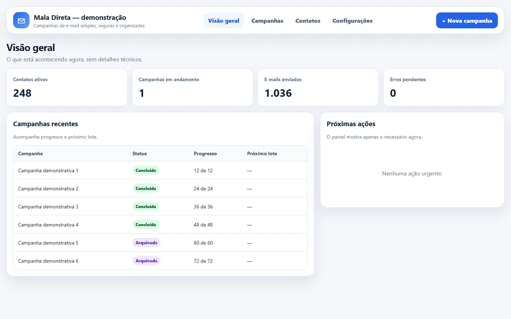
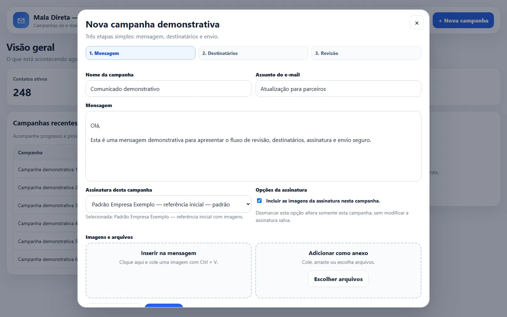
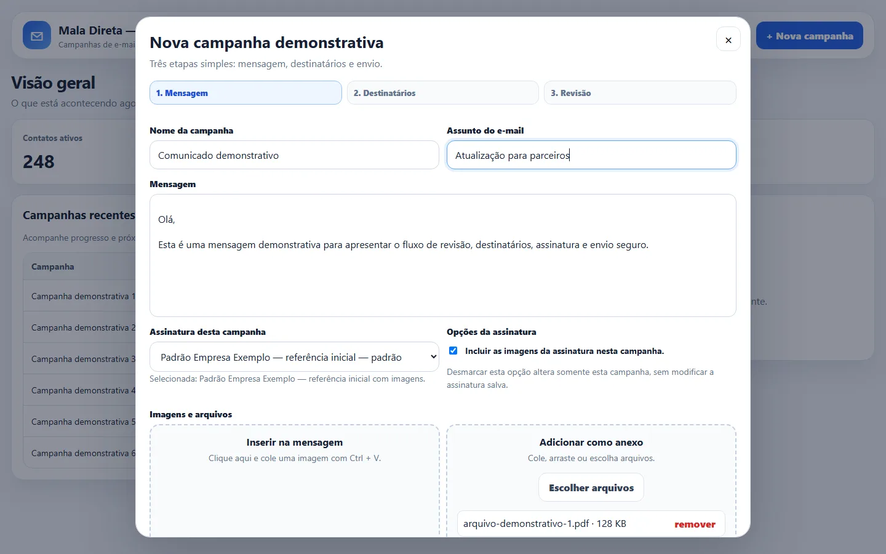
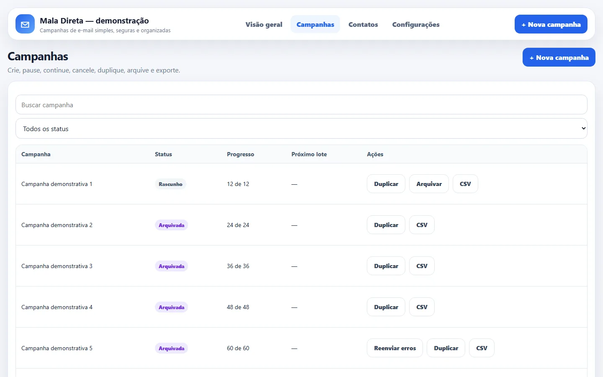
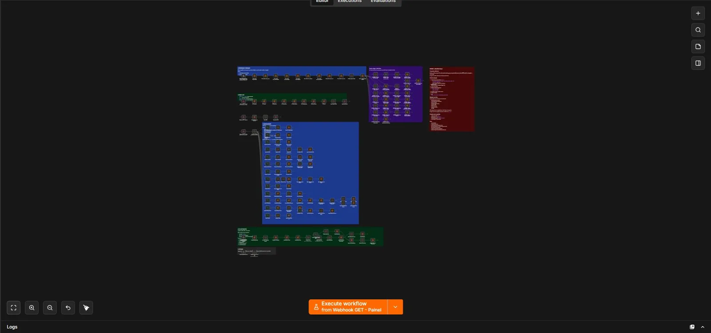

Problema
Planilhas, cópia manual de endereços e assinaturas dispersas dificultavam controlar envios, falhas e cancelamentos.
AUTOMAÇÃO DE CAMPANHAS
EM PRODUÇÃOn8n, filas e confiabilidade
Desenvolvi um produto interno para preparar, revisar, agendar e acompanhar campanhas sem exigir que a equipe trabalhe diretamente no editor do n8n.

TELAS E FLUXOS




Escopo público
O repositório contém dois workflows, com 158 nós no principal e nove Data Tables de domínio.
Privacidade
Credenciais, destinatários, campanhas reais e referências internas foram removidos.
Planilhas, cópia manual de endereços e assinaturas dispersas dificultavam controlar envios, falhas e cancelamentos.
Painel web, regras de campanha, destinatários separados, fila, SMTP, histórico, deduplicação, supressão e workflow de erros.
Coloquei a verificação de cancelamento dentro do loop, antes de cada destinatário, porque validar apenas no início não interrompia corretamente uma campanha já em processamento.
Limites atuais
O fluxo não representa SLA formal de entrega. Bounce, reputação, descadastro, SPF, DKIM e DMARC precisam ser acompanhados conforme o volume.
Próxima evolução
Em maior escala, eu separaria o envio em workers, adotaria broker gerenciado, métricas centralizadas e políticas formais de retenção e supressão.
Este case apresenta uma versão pública sanitizada de uma solução interna em uso.